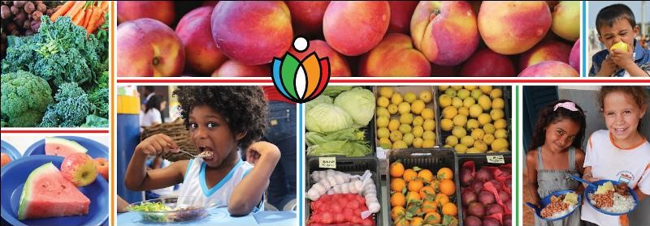
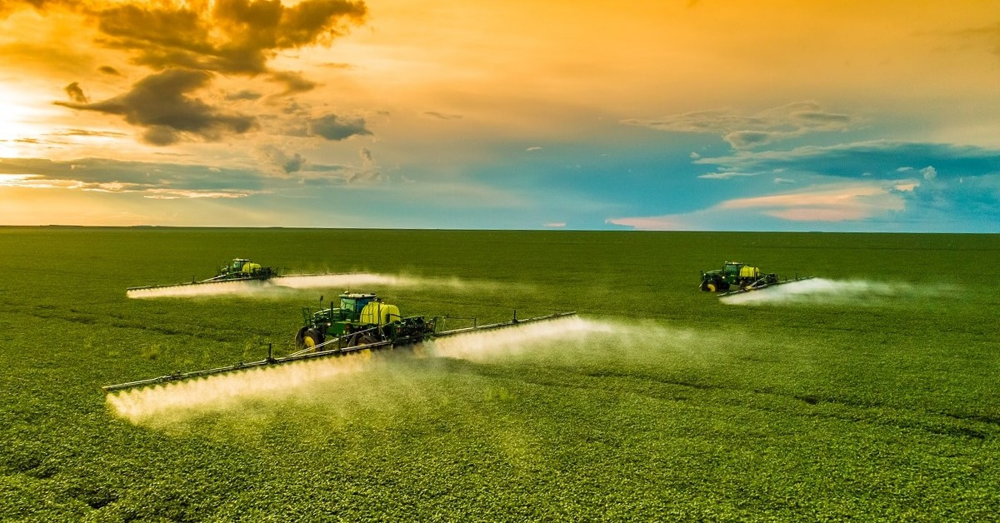
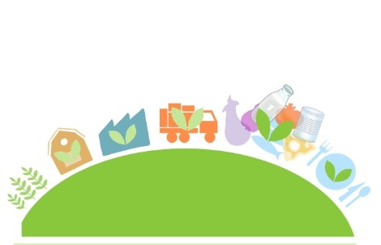
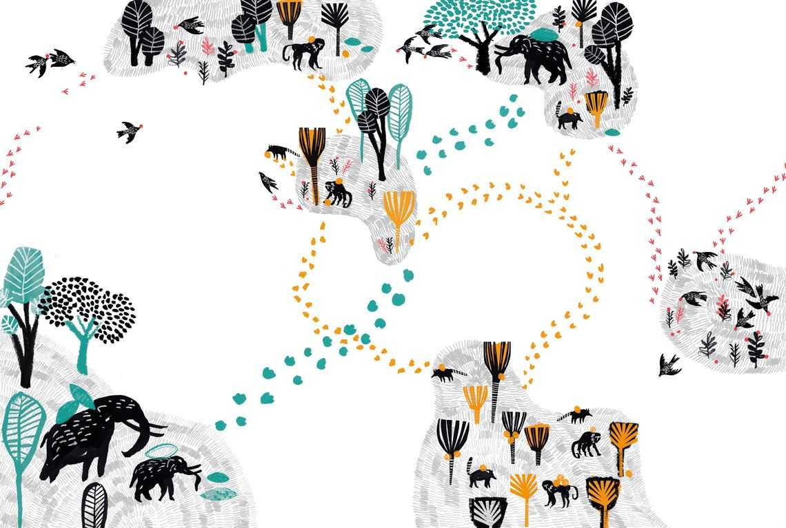

Meta 1: Acabar com a fome e garantir acesso a alimentos
suficientes
Até 2030, acabar com a fome e garantir o acesso de todas as
pessoas, em particular os pobres e pessoas em situações
vulneráveis, incluindo crianças, a alimentos seguros,
nutritivos e suficientes durante todo o ano.

Meta 2: Acabar com todas as formas de má-nutrição
Até 2030, acabar com todas as formas de má-nutrição, incluindo
atingir, até 2025, as metas acordadas internacionalmente sobre
nanismo e caquexia em crianças menores de cinco anos de idade,
e atender às necessidades nutricionais dos adolescentes,
mulheres grávidas e lactantes e pessoas idosas.

Meta 3: Dobrar a produtividade agrícola e a renda dos pequenos
produtores
Até 2030, dobrar a produtividade agrícola e a renda dos
pequenos produtores de alimentos, particularmente das
mulheres, povos indígenas, agricultores familiares, pastores e
pescadores, inclusive por meio de acesso seguro e igual à
terra, outros recursos produtivos e insumos, conhecimento,
serviços financeiros, mercados e oportunidades de agregação de
valor e de emprego não agrícola.

Meta 4: Garantir sistemas sustentáveis de produção de
alimentos
Até 2030, garantir sistemas sustentáveis de produção de
alimentos e implementar práticas agrícolas resilientes, que
aumentem a produtividade e a produção, que ajudem a manter os
ecossistemas, que fortaleçam a capacidade de adaptação às
mudanças climáticas, às condições meteorológicas extremas,
secas, inundações e outros desastres, e que melhorem
progressivamente a qualidade da terra e do solo.

Meta 5: Manter a diversidade genética de sementes e animais.
Até 2030, manter a diversidade genética de sementes, plantas
cultivadas, animais de criação e domesticados e suas
respectivas espécies selvagens, inclusive por meio de bancos
de sementes e plantas diversificados e bem geridos em nível
nacional, regional e internacional, e garantir o acesso e a
repartição justa e equitativa dos benefícios decorrentes da
utilização dos recursos genéticos e conhecimentos tradicionais
associados, como acordado internacionalmente.